Land soft · walk the moon · fly again
HOW TO PLAY
Touch down gently on a flat pad, climb out, scavenge, then blast off for the next one. Each successful landing makes the next one a little harder.
2D LANDER
- W / ↑ / Space thrust (burns fuel)
- A D / ← → rotate
- M inventory · Esc pause / settings
- On touch: on-screen ◀ ▲ ▶ buttons
FUEL, BRIEFLY
- Refuel on the moon.
LANDING CHECKLIST
- Pick a flat pad — bonus pads marked X2 / X3 / X5 multiply your score.
DON'T
- Come in hot — velocity is the #1 killer.
- Land on a slope — "CRASHED ON UNEVEN TERRAIN".
- Burn all your fuel far from a pad — you'll glide into the ground.